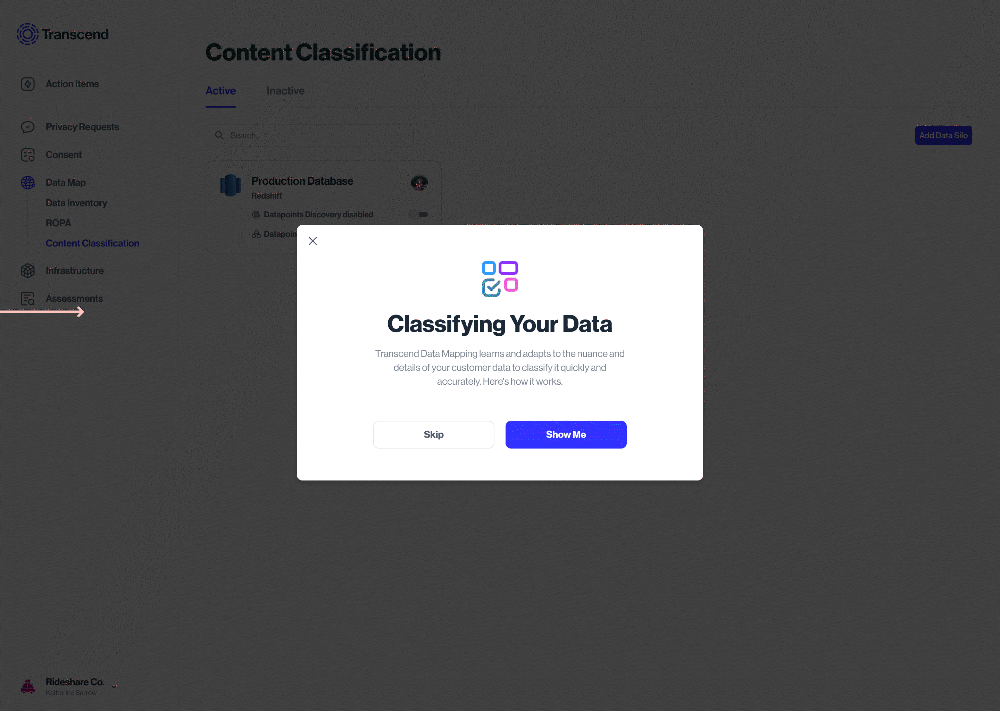

Property marketing site: deterministicDesign + generativeProgramming

Challenge
Providing an interactive experience to sell a property for prospective buyers
This website leads the buyer through the digital experience, I used experimenting with figma, building one-to-one and using Coding assistance as assistants. This posed a new challenge. UI designed in Figma
Elevating my Frontend design skills with best practice, by having AI refine my code.

Onboarding
From Onboarding to the Aha moment
Triggers after the first database ingestion
Empty state
Classification explainer
Datasets & sources
Ingesting databases, browsing files, and scanning protocol
The scanning protocol sets how often the Transcend algorithm gets trained by customer data

Browsing through a fully ingested db

All database states

Scanning protocol

Other table states

Algorithm training
The model detects, tags similar metadata across datapoints, and suggests a classification into categories
Accepting or rejecting the label is the supervisory training of the model. The algo then knows to recognize & classify the rest
This could be a Yes/No/Not sure

Expected user actions

Training tab

State: Datasilo classification is complete

State: User skipped some classifications
Changing the category suggested by the classification model


Training a particular datapoint, not the whole database/silo


Post training
The model assigns confidence levels to the datapoints classification
Which the Data analyst can browse, & adjust

Bulk edit action for Datapoints
Single Datapoint edit
Outcomes
The Business impact
As at 2023, the launch year, 2/3 of all Transcend customers use this brand new feature.